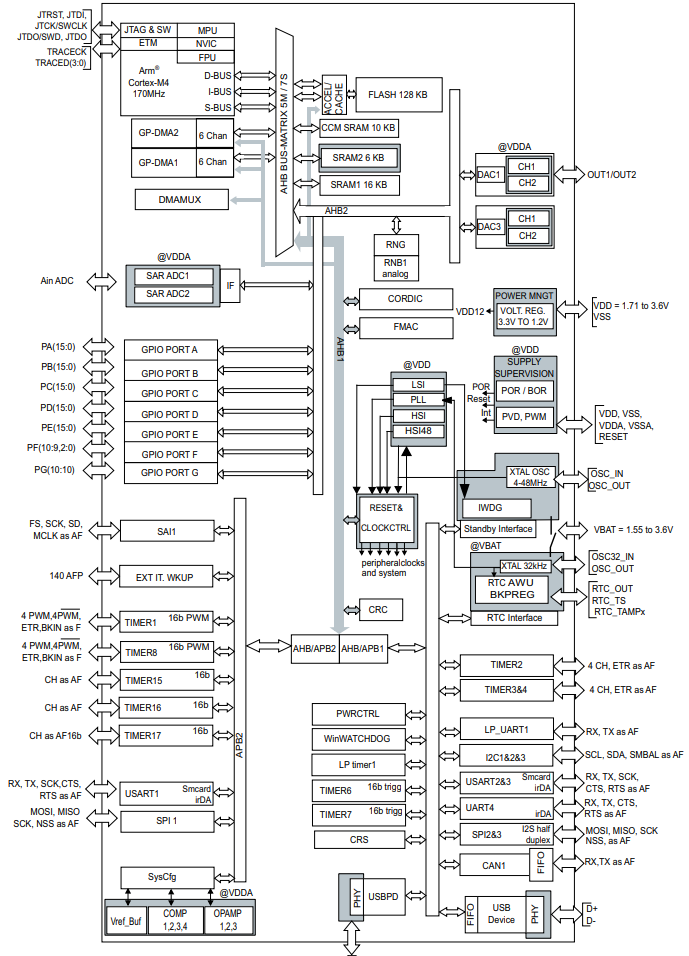

STM32G431¶
Xin简介¶

规格参数¶
ST Cortex-M4 MCU 内嵌了数学运算加速器，丰富的数模外设，运放、比较器、DA、AD等，硬件加密使用的是AES-256，带有双安全存储区域，ART加速提高Flash的读取运行速度。
基本参数¶
发布时间：2019年5月
供电电压：1.71 to 3.6 V
工作温度：-40°C to +85°C/125°C
RAM容量：32 KB
Flash容量：32/64/128 KB
封装规格：32 to 100 Pin

特征参数¶
芯片架构¶
SAI¶
通信接口¶
USART |
SPI |
I2C |
USB-H |
USB-D |
OTG-HS |
CAN-FD |
|---|---|---|---|---|---|---|
5 |
3 |
3 |
性能测试¶
计算性能¶
CoreMark 已成为测量与比较处理器性能的业界标准基准测试，CoreMark的得分越高意味着性能更高，使用C语言包含列举，数学矩阵操作和状态及CRC等运算法则。

FIR计算¶

Xin选择¶
该系列是2012年推出的STM32F3系列的延续，它继承了很多STM32F3的理念和基因，带来更强劲的性能和数模效果。
STM32G4系列最高工作温度可达到125°C，具有更强的抗电气干扰能力，可耐受4kV以上的瞬变电压，增强的可靠性也进一步扩展了其应用范围，特别是一些工业领域。
STM32G4x4系列具有高分辨率定时器和复杂波形生成器，以及事件处理器，这使其特别适合于数字电源应用，如数字开关电源、照明、焊接、太阳能和无线充电等。
品牌对比¶
STM32G4与STM32F3系列高度兼容，作为后者的升级选项，确保在设计不同性能等级的衍生应用时提供卓越的效率。
系列对比¶

型号对比¶

替换方案¶
就规格配置而言 STM32G431 规格升级为 STM32G474 后者拥有更多资源数量和更高的配置，特别是 FSMC 和 HRTIM。
就封装而言，主要差异在LQFP32和LQFP128这两端
Xin应用¶
开发工具¶
使用STM32芯片最直接方式是通过 stm32cube 工具构建基本运行体，不用开发者自己去研究寄存器初始化相应外设（但请注意使能）。
源圈OS-Q通过先验证的方式，集成了更多可信赖资源 PlatformIO STM32G4 可以作为一个启动模板，作为一个开源编译体系便于多系统下开发。
硬件平台¶
NUCLEO-STM32G431RE¶
外设使用¶
CMP¶
4 x ultra-fast rail-to-rail analog comparators
UCPD¶
CAN-FD¶
在工厂自动化中， 数据连接是必不可少的， 尤其是在工业4.0概念不断扩大其覆盖范围的今天。 许多标准被用于支持专门开发的现场总线， 包括经典CAN （Modbus和CANopen）、 RS-485（PROFIBUS、 CC-Link和Modbus）、 以及新的CAN FD和实时以太网。

开源生态¶
如果你要探索一些开源项目，可能时常遇到基于 PlatformIO 构建的工程，通过跨平台编译，直接在编辑器中集成，可以云端部署，比常用的IDE拥有更多的灵活性。
Xin总结¶
能力构建¶
要点提示¶
浮点运算一般需要在运算结果前写上（float）或者标注f，否则一律会被认为双精度，将会大大增加运算时间。
除法和开方的运算周期过长，如无必要，尽量不要用，尽量将其转化为运算周期较少的加减乘运算
问题整理¶
不管选用内部时钟源还是外部晶振，只要配置成170MHz,芯片肯定会复位。经过反复测试验证，发现设置PLL所产生的时钟只有在不高于80MHz时，芯片才能正常运行。
主频的提高往往意味着功耗的增大或噪声及干扰方面可能加剧。于是试图从系统供电能力、电源稳定度、时钟稳定性方面查找原因，发现芯片的VDDA脚虚焊了，重新处理后芯片于170MHz运行稳健。